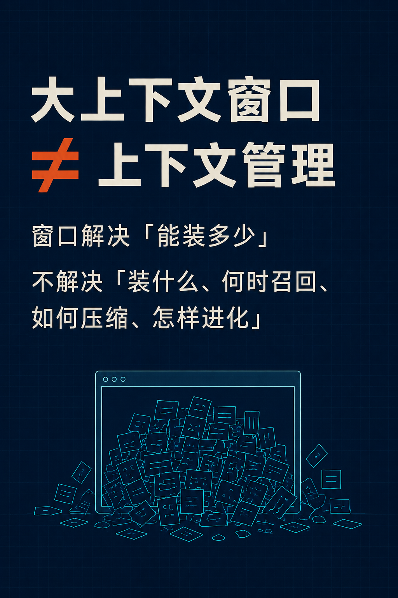
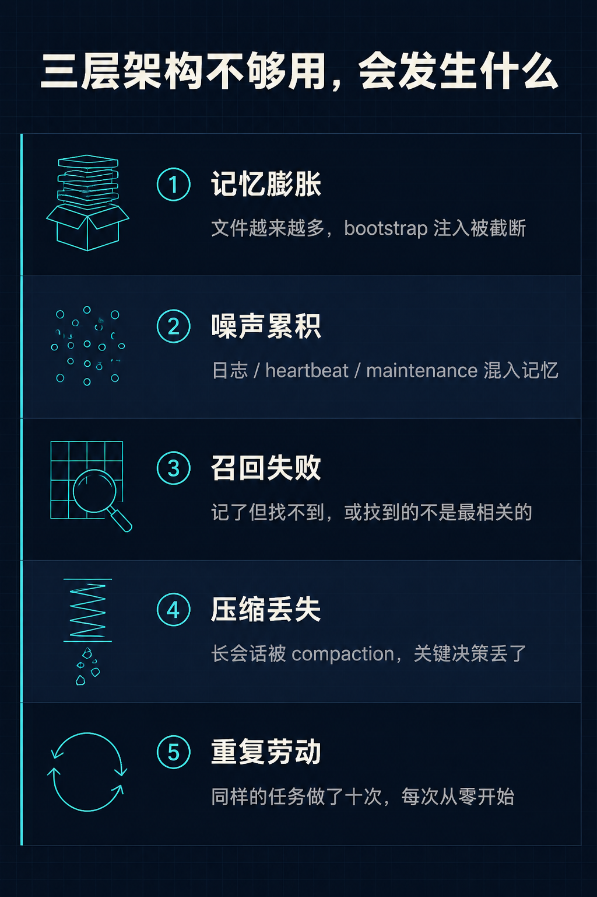
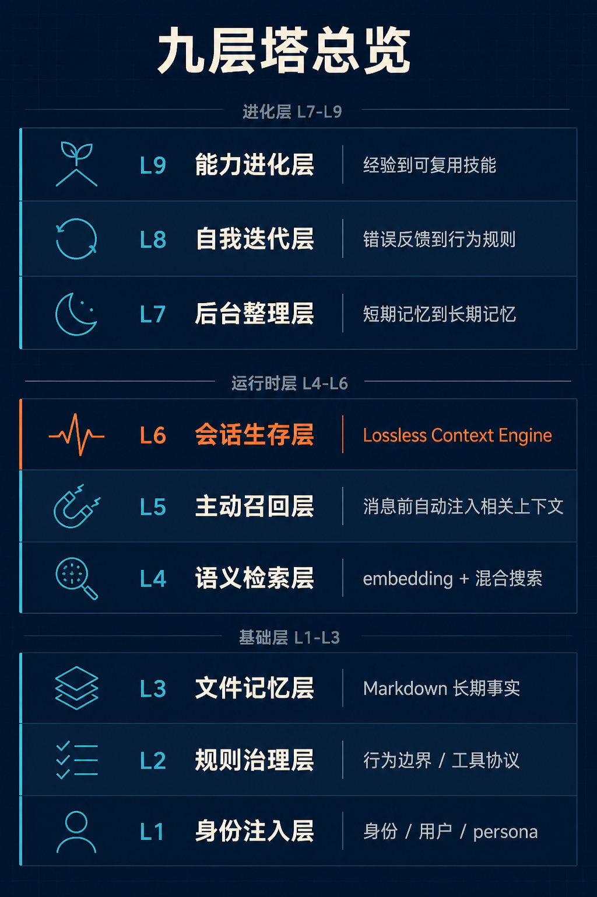
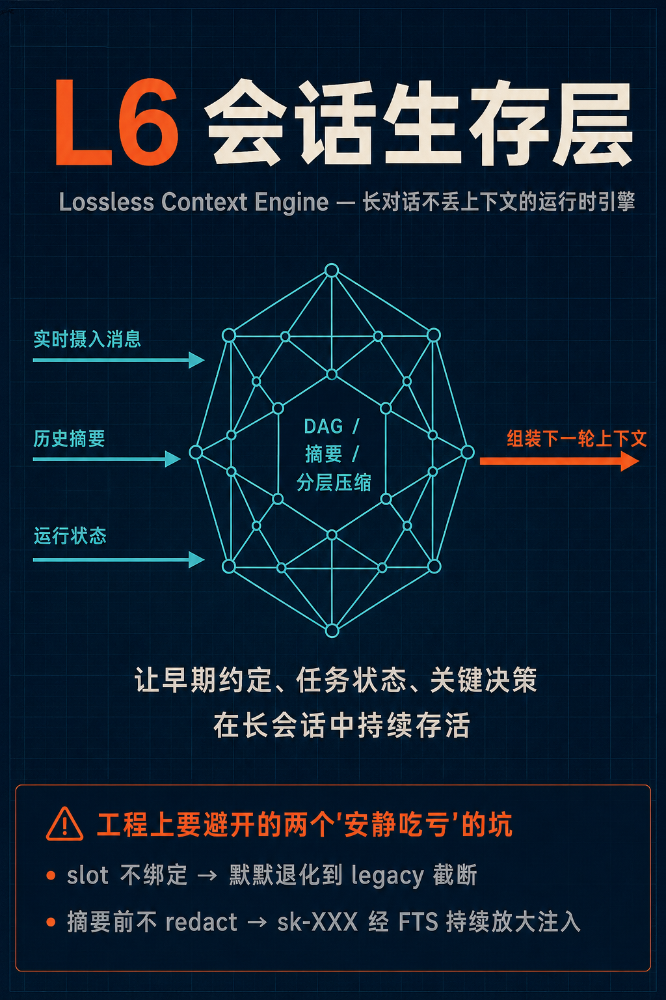
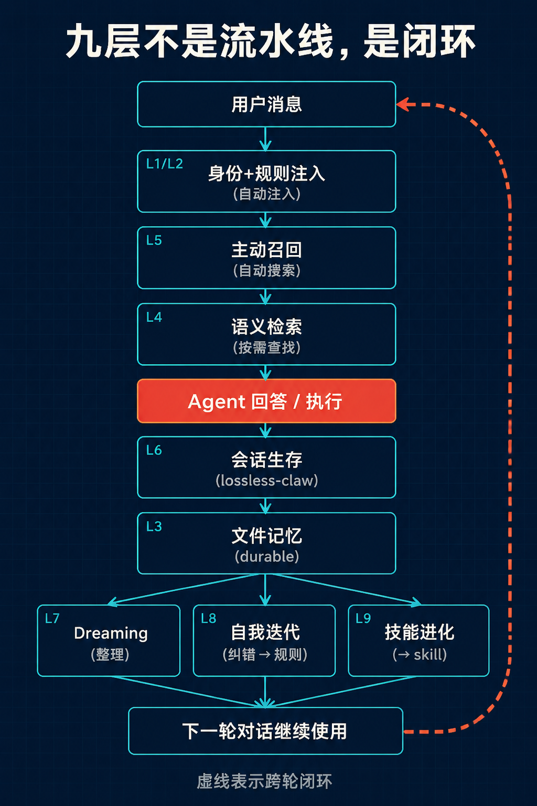
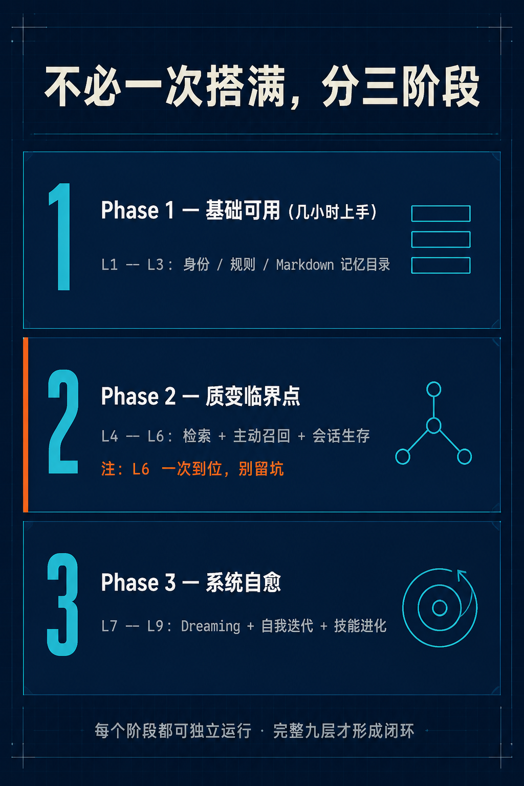

HTML → 图文号 / 小红书图集
把一篇长 HTML 文章交给 Agent，自动产出 8-10 张统一风格的卡片图 + 配套文案，直接发小红书 / 公众号图文号。所有图由顶级文生图模型（GPT Image 2 等）生成，不是模板拼接。
示例图集：上下文管理九层塔
以一篇 22k 字技术深度长文为输入，由 Agent 拆解 → 写 prompt → 调 gpt-image-2 生成的 8 张完整卡片。原始素材 + 设计过程 ↗
 02 / 核心论点
02 / 核心论点
{kind=link}

03 / 五个问题{kind=link}

04 / 九层总览{kind=link}

05 / L6 会话生存层{kind=link}

06 / 数据流闭环{kind=link}

07 / 三阶段路径{kind=link}

08 / 收尾{kind=link}
← 横向滑动查看全部 8 张 · 点击单图放大 →
上下文管理九层塔｜长期 Agent 的活法
🧱 大上下文窗口 ≠ 上下文管理 窗口解决"能装多少"，但不解决：装什么、何时召回、如何压缩、跨会话怎么延续、多 Agent 怎么共享又隔离、错记忆怎么修、经验怎么变能力。 我把 OpenClaw 多 Agent 跑了 3 个多月、近 1 个月集中整理后的架构整理成"九层塔"： ▸ 基础层 L1-L3：身份 / 规则 / Markdown 记忆 ▸ 运行时层 L4-L6：检索 / 主动召回 / 会话生存 ▸ 进化层 L7-L9：后台整理 / 自我迭代 / 技能进化 最容易"安静吃亏"的是 L6——contextEngine slot 不绑定不会报错，只会悄悄退化；摘要器不 redact secrets，sk-XXX 会经 FTS + vector 持续放大注入。 ✦ 好的 Agent 不是记得更多，是知道何时遗忘。✦
工作流
Skill 在你的 agent（Claude / Codex 等）里跑，浏览器只负责呈现结果。
在 agent 里装 Skill
给你的 Claude / Codex 装上 html-to-wechat Skill 包，让 agent 学会"看一篇 HTML 文章 → 拆图集 → 写 prompt → 调生图 API"这条流。
跑一条命令
把 HTML 文件丢给 agent，例如 /h2w-images report.html。agent 在本地完成内容拆解、生图、文案生成，输出到一个 session 目录。
本页面预览 + 下载
agent 跑完后给你一个本地 URL 自动打开本页面的 app 态：单图重生成、平台框预览、一键下载 zip、复制文案。